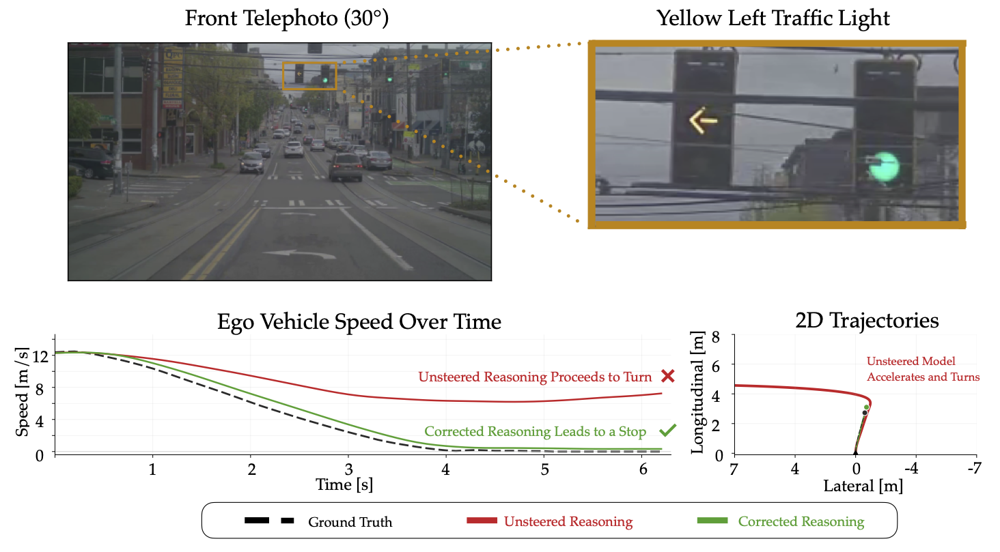
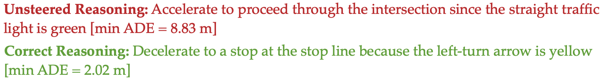
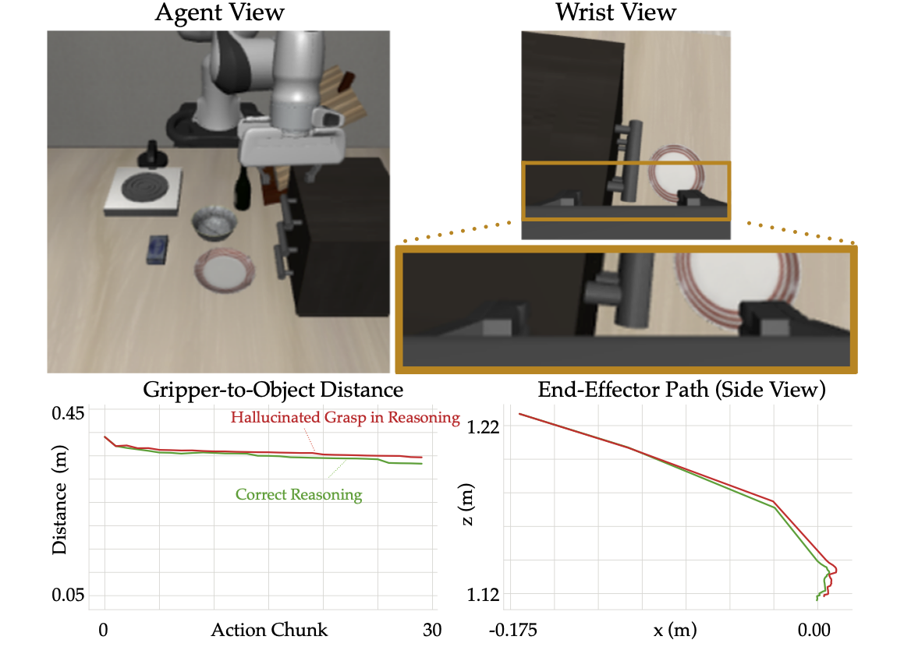
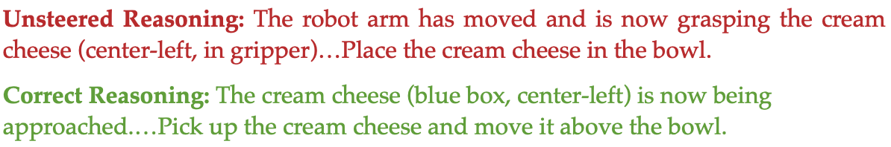

Reasoning-enabled VLA policies expose chain-of-thought (CoT) traces that appear to explain and guide their actions, creating a potential interface for runtime safety through reasoning monitoring and correction. In this work, we define and operationalize two evaluation axes for assessing when this interface can improve embodied behavior: correctability, which measures whether unreliable reasoning can be detected and improved during generation, and actionability, which measures whether reasoning corrections produce behaviorally meaningful changes in the intended direction. To enable correctability, we introduce Token-level Reward for Utility-Steered Chain-of-Thought (TRUST), an offline-trained value model that predicts eventual reasoning correctness from partial prefixes and uses these estimates to monitor and selectively steer reasoning generation in frozen VLA policies. On the Alpamayo 1.5 driving VLA, TRUST monitors correctness with 88.9% accuracy and improves reasoning correctness from 75.9% to 90.0%. On a baseline-defined challenging subset in AlpaSim, TRUST reduces collision rate by 30.4% and maximum trajectory error by 11.5% relative to the unsteered policy, outperforming a compute-matched Best-of-4 baseline. On the DeepThinkVLA manipulation VLA, TRUST improves the correctness of grasp-state claims from 69.3% to 90.2% and action-choice claims from 68.8% to 85.9%, yet closed-loop task performance on LIBERO-Plus remains largely unchanged. Empirical analysis reveals intent-consistent behavioral effects in Alpamayo 1.5 but limited effects in DeepThinkVLA, helping interpret these different task-level outcomes. Together, our results show that gains in reasoning correctness do not automatically imply gains in embodied performance, motivating evaluation of correctability and actionability when using CoT as a runtime safety interface.




We substitute scene-consistent reasoning for erroneous reasoning traces and examine whether actions change in the intended direction. These two examples illustrate contrasting behavioral responses to corrected reasoning.